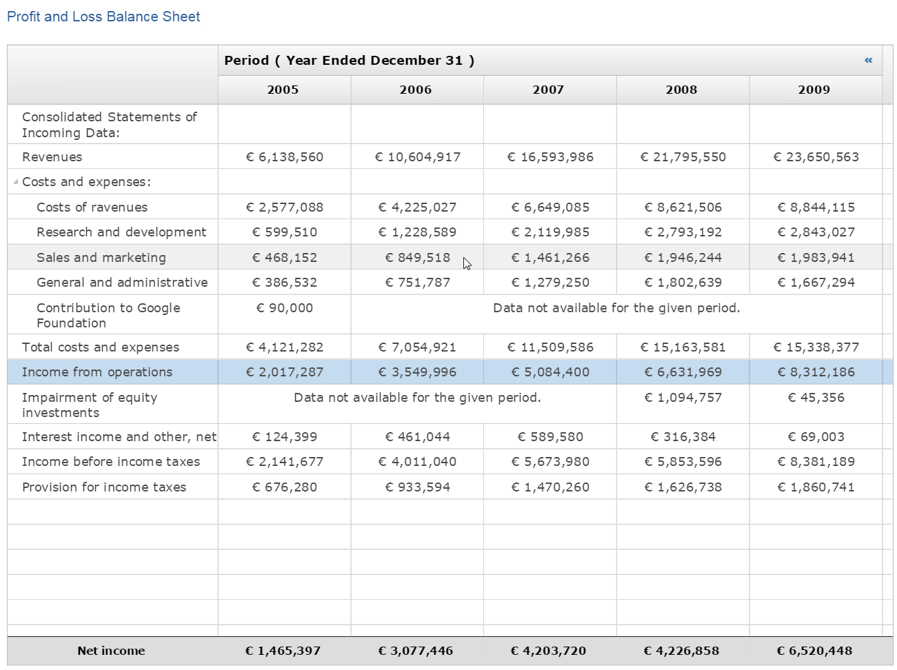

The underlying platform bundles org.eclipse.core.databinding.* now require Java 8. The Bundle-RequiredExecutionEnvironment (BREE) of "org.eclipse.rap.jface.databinding" bundle has been updated to JavaSE-1.8.
JavaScriptLoader service,
but we had no service to load CSS files.
So we've introduced a new service interface named ClientFileLoader that can load
both, JS and CSS files.
The service provides two methods, requireJs and requireCss, that both
accept a URL to load.
The ClientFileLoader ensures that every file is loaded only once per session, so you can safely
use it in the constructor of a custom widget.
ClientFileLoader loader = RWT.getClient().getService( ClientFileLoader.class );
loader.requireJs( JS_URL );
loader.requireCss( CSS_URL );
This new service replaces the existing JavaScriptLoader service, which has been
deprecated.
In those rare cases where RAP requires a slightly different API than SWT, we've used to
provide additional methods in utility classes like BrowserUtil and DialogUtil.
These utilities contain non-blocking version of the SWT methods Browser.evaluate()
and Dialog.open(), that are needed for the JEE compatible mode.
We avoided making extensions to classes and interfaces from SWT.
Reconsidering this approach, we think that it makes the developer's life harder, as these methods cannot be found directly, and the separation does not bring a real advantage. So we decided to take the freedom to add those few extensions directly to the SWT classes. For example, instead of:
DialogUtil.open( dialog, returnCode -> {
if( returnCode == SWT.OK ) {
// do something
}
});
you can now write:
dialog.open( returnCode -> {
if( returnCode == SWT.OK ) {
// do something
}
});
The non-blocking methods are now available on Dialog and Browser,
respectively.
DialogUtil and BrowserUtil have been deprecated.
The RichText widget has been graduated as Nebula RichTextEditor and moved from the RAP Incubator to the RAP repository. It supports a subset of the API from the RichTextEditor found in the Nebula Release.
The RichTextEditor is included in the RAP target platform and can be used simply by importing the org.eclipse.nebula.widgets.richtext package.
In this release we added support for right-to-left orientation to all widgets. Like in SWT, the coordinate system of an RTL Composite is mirrored horizontally (the [ 0, 0 ] point is on top-right corner).
Support for alpha in Color has been added to SWT in Mars. As RAP client supports RGBA natively, we added the missing API:
RGBA classColor(Device, RGBA)Color(Device, RGB, int)Color(Device, int, int, int, int)getAlpha()getRGBA()
The internal org.eclipse.swt.internal.image package has been updated to the latest
SWT sources, which provides support for more image formats like 256x256 px ICOs.
GC now implements the setTransform method.
Transform transform = new Transform( display );
gc.setTransform( transform );
gc.setBackground( display.getSystemColor( SWT.COLOR_BLACK ) );
gc.fillRectangle( 0, 0, 100, 50 );
transform.rotate( 10 );
gc.setTransform( transform );
gc.setBackground( display.getSystemColor( SWT.COLOR_RED ) );
gc.fillRectangle( 0, 0, 100, 50 );
transform.rotate( 10 );
gc.setTransform( transform );
gc.setBackground( display.getSystemColor( SWT.COLOR_YELLOW ) );
gc.fillRectangle( 0, 0, 100, 50 );
GridItem now implements the setColumnSpan method. The Grid itself has been given a more spreadsheet-like default look to better work with this new feature. It is now also separately themeable (previously shared the a theme with Tree).

Tree, Table, Grid, List, Combo, CCombo and DropDown have a new default theming for selected items. Instead of a dark-blue gradient a solid, semi-transparent light blue is used. This preserves the color of the text elements (they are now longer set to white) and allows elements like cell backgrounds that are normally hidden beneath the selection effect to shine through. It also works better with the new Nebula Grid look. The business theme remains unchanged.
The CTabItem widget now supports badges:

Those badges can be set using a data key:
ctabItem.setData( RWT.BADGE, "7" );
The given string is displayed at the top-right of the item. To adjust the look of badges, the Widget-Badge element can be used. It currently supports the properties font, color, background-color, border and border-radius.
The implementation of method Control#redraw(int, int, int, int, boolean) has been
improved. Now, only the provided rectangle is redrawn on the client without clearing rest of the
drawing area.
WebClient.PAGE_OVERFLOW with one of the values "scroll", "scrollX" or "scrollY"
must be set to your application.
public class MyApplication implements ApplicationConfiguration {
@Override
public void configure( Application application ) {
Map properties = new HashMap();
...
properties.put( WebClient.PAGE_OVERFLOW, "scrollY" );
application.addEntryPoint( "/", MyEntryPoint.class, properties );
}
}